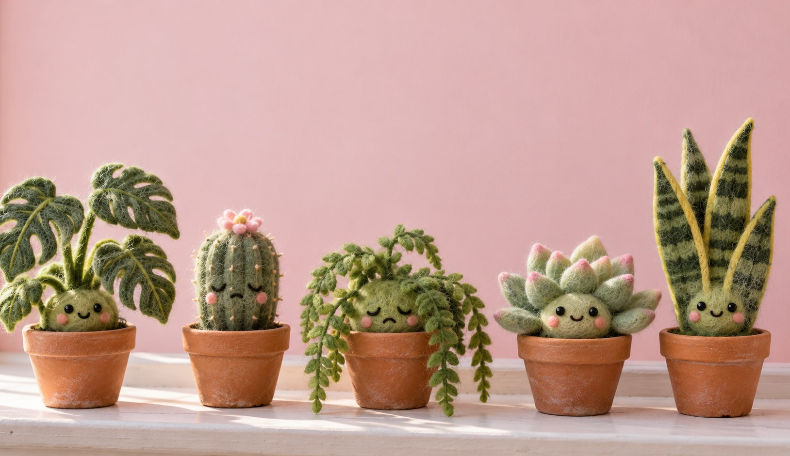
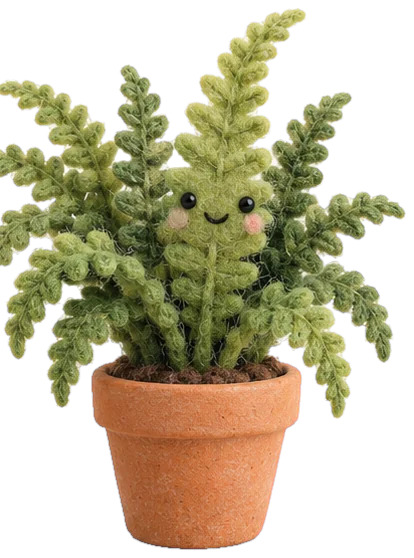
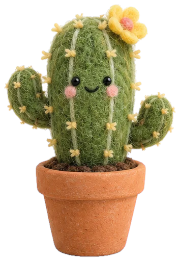
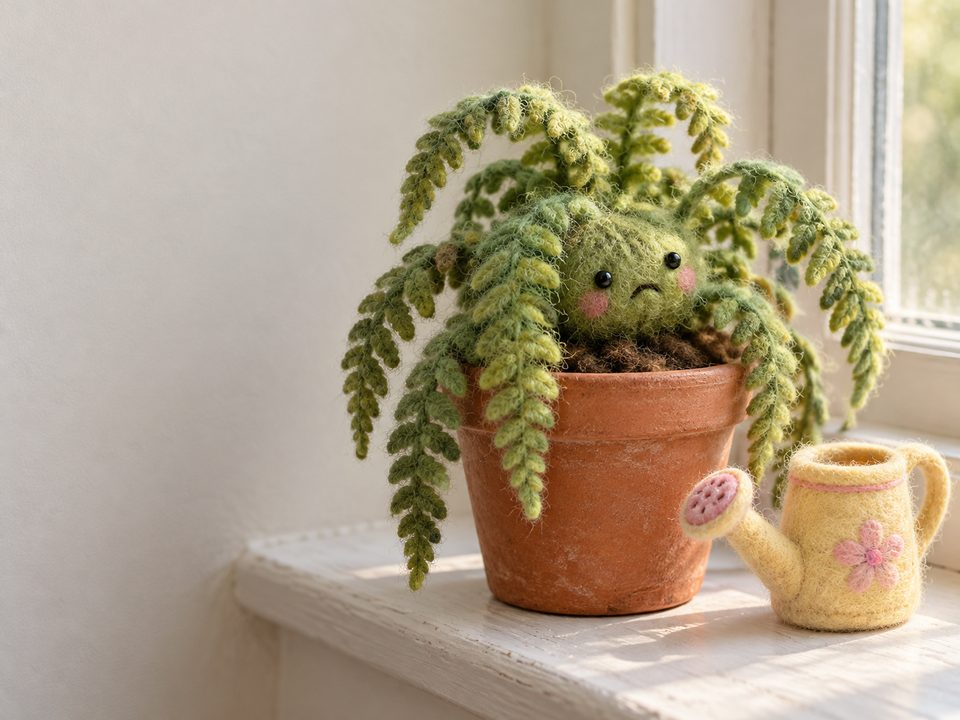
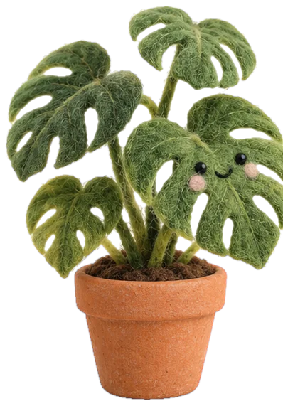
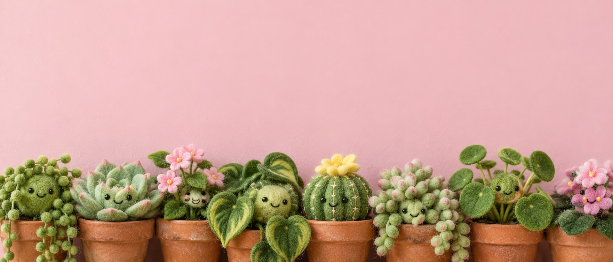

Fewer funerals
for the fern.
Photograph a plant and Sprout turns it into a character that tells you when it’s thirsty, cold or stuck in the dark.
Free for your first five plants.


FernThirstyCould I have a drink? My soil’s gone dry.

CactusToo darkIt’s very dark in this corner. Can’t wake up.
How it works
Point. Shoot. Meet your plant.
- 1
Take its picture
The fern on the kitchen sill, the cactus by the bath. One photo each.
- 2
It gets a face
Sprout turns the photo into a character with a name and a mood.
- 3
It speaks up
When it’s thirsty, cold or stuck in the dark, it tells you. In words.
Fern · moody, mostly thirsty
FernnowCould I have a drink?
It only ever says three things. Each one means you can fix it today.

FernThirstyCould I have a drink? My soil’s gone dry.
Thirsty
When the soil’s gone dry
No more poking the soil and guessing from the colour of the leaves. The fern asks for a drink, and you pour one.
CactusColdBrr. That window’s draughty tonight.
When it’s too cold
Glass gets chilly after dark. Your cactus says so, and you move it a little further from the pane.

MonsteraToo darkBit gloomy over here. Somewhere brighter?
When it’s stuck in the dark
Corners look cosy to us and miserable to a monstera. It asks for the light, and you find it a better spot.
Everyone on the sill gets a face. Tap one.
Six of the usual suspects. Yours will look like your own plants, and say what they need.
FernCould I have a drink? My soil’s gone dry.
Pricing
Five plants free. The whole jungle for £3.99 a month.
Before you download
- Sprout is new. There are no reviews or download numbers yet, so you won’t find any stars on this page.
- It can tell you what a plant needs. It can’t hold the watering can.
- Sprout is a fictional product, made for a design study. Read the small print.
Start with the one that’s drooping.
Free for five plants. £3.99 a month for the rest.
Get Sprout free
